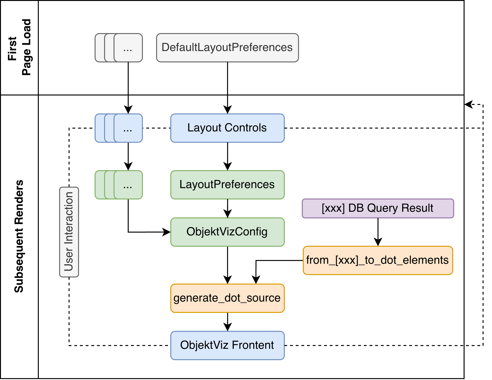

Backend Concepts
The ObjektViz backend has one job: transform your Event Knowledge Graph data into dot source.
You can think of the data flow in the following diagram:

- Repository (Purple): Gets data from your database (Neo4j, KuzuDB, etc.)
- BackendConfig (Green): Combines all your preferences (layout, filters, shaders) into one configuration
- from_[db]_to_dot_elements (Orange): Dot elements representing nodes and edges in the graph and can be converted to DOT string.
- generate_dot_source (Orange): Takes dot elements, backend configuration and generates a DOT source string.
- DOT Source: GraphViz-compatible graph description that the frontend renders that is paased to ObjektViz Frontend component (Blue).
Repository
Repositories hide database differences behind a common interface. This is usefull since there are different flavours of cypher or in case you want to use completly diffrernt LPG database.
# Both work the same way
neo4j_repo = Neo4JEKGRepository(neo4j_driver)
kuzu_repo = KuzuEKGRepository(kuzu_connection)
# Same interface
nodes, edges, syncs = repo.proclet(class_type="EventType")
attributes = repo.class_attributes(class_type="EventType")
Adding a new database?
Implement AbstractEKGRepository, if the query result is not compatble with Neo4J or KuzuDB, you should also extend DotNode and DotEdge for the new database to allow the query to be converted to DOT string.
BackendConfig
BackendConfig you can control the appearance and content of your visuzlied graph the BackendConfig class that is then passed to the generate_dot_source function. If you are looking into customizing the bahavor look at the source BackendConfig and the related preferences classes, they are all well typed and include doc strings explain what each attribute does.
Preferences
Preferences are structured data classes that define how your visualization should look and behave. They come from the control components and get bundled into the BackendConfig:
- LayoutPreferences: How to arrange nodes (clustering, spacing, direction)
- EventClassPreferences: What to show in nodes (title, captions, shading attribute)
- DFCPreferences: How to style edges (thickness range, labels, shading attribute)
These get created by the control components and passed to BackendConfig. Most users don't create these directly.
Filters
Filters decide which nodes and edges appear in your visualization:
# Show everything
filter = DummyFilter()
# Show only high-frequency events
filter = RangeFilter("frequency", min_value=10)
# Show orders OR payments
filter = OrFilter([
MatchFilter("EntityType", ["Order"]),
MatchFilter("EntityType", ["Payment"])
])
# Combine conditions
filter = AndFilter([
MatchFilter("EntityType", ["Equipment"]),
RangeFilter("frequency", (5, 50))
])
Use this in your dashboard:
config = BackendConfig(
event_class_root_filter=my_node_filter,
dfc_root_filter=my_edge_filter,
# ... other settings
)
Shaders
Shaders map your data values to node/edge color and edge thickness:
# Basic: min/max values become lightest/darkest
shader_factory = lambda config, attr, cmap: NormalizedShader(config, attr, cmap)
# Better: ignore outliers using percentiles
shader_factory = lambda config, attr, cmap: PercentileShader(
config, attr, cmap, percentile_range=(10, 90)
)
# Best for skewed data: robust statistical scaling
shader_factory = lambda config, attr, cmap: RobustScalerShader(config, attr, cmap)
The general preferences panel has a selector for the provided shader types, but you can also define your own shader factory function with your own shader implementation.
When to use which shader
- Use NormalizedShader when your data is well-behaved
- Use PercentileShader when you have outliers
- Use RobustScalerShader when your data is heavily skewed
Putting It Together
Here's the typical flow in your dashboard:
# 1. Get user preferences from UI controls
layout_prefs = layout_preferences_input(defaults, attributes)
...
# 2. Create filters based on user input
node_filter = DummyFilter()
if st.checkbox("Filter low-frequency events"):
node_filter = RangeFilter("frequency", min_value=st.slider("Min frequency", 1, 100))
# 3. Create shader factory
my_shader_factory = builtin_shader_selector() # OR
my_shader_factory = lambda config, attr, cmap: MyCustomShader(config, attr, cmap)
# 3. Configure backend
config = BackendConfig(
layout_preferences=layout_prefs,
event_class_root_filter=node_filter,
shader_factory=my_shader_factory,
...
)
# 4. Prepare databse query result
event_classes_db, dfc_db, sync_db = queries.proclet(class_type)
dot_nodes, dot_edges, node_shaders, edge_shaders, _ = from_[kuzu]_to_dot_elements(
event_classes_db, dfc_db + sync_db, config
)
# 4. Generate visualization
dot_source = generate_dot_source(dot_nodes, dot_edges, node_shaders, edge_shaders, config)
# 5. Show it
objektviz_component(dot_source, config)
Note
from_[db]_to_dot_elements the function is quite simple, it just wraps the result of the database query in Dot element subclasses.
Common Customizations
Different default colors? Change shader_groups_color in your BackendConfig.
Custom filtering logic? Extend AbstractFilter:
class MyCustomFilter(AbstractFilter):
def is_passing(self, entity: dict) -> bool:
# Your logic here
return some_condition(entity)
New database?
Extend AbstractEKGRepository:
class MyDatabaseRepo(AbstractEKGRepository):
def proclet(self, class_type: str):
# Your database queries here
return nodes, edges, syncs
Then create factory functions to convert your database results to DOT elements:
def from_mydatabase_to_dot_elements(nodes_db, edges_db, config):
dot_nodes = [MyDatabaseDotNode(node, config) for node in nodes_db]
dot_edges = [MyDatabaseDotEdge(edge, config) for edge in edges_db]
# Create shaders
node_shaders = create_shaders(dot_nodes, config)
edge_shaders = create_shaders(dot_edges, config)
return dot_nodes, dot_edges, node_shaders, edge_shaders
The DOT node/edge classes handle converting your database records into GraphViz elements that respect filters and styling.
Custom visual effects? Extend AbstractShader:
class MyCustomShader(AbstractShader):
def shading_color(self, entity: dict) -> str:
# Your color logic here
return "#ff0000"
The backend is designed to be extended at these specific points. Most users will only need to customize filters and shaders.